Let us compute
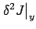
for a given test curve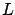
will appear, we assume that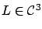
. We work with the single-degree-of-freedom case for now. The left-hand side of (2.56) is
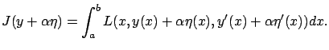
We need to write down its second-order Taylor expansion with respect to
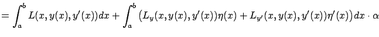 |
||
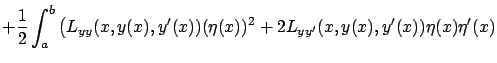 |
(2.55) | |
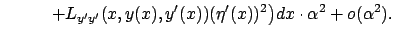 |
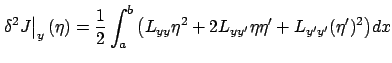 |
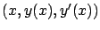
. This is indeed a quadratic form as defined in Section 1.3.3. Note that it explicitly depends on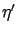
as well as on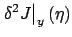
by eliminating the ``mixed" term containing the product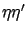
. We do this by using--as we did in our earlier derivation of the Euler-Lagrange equation--the method of integration by parts:
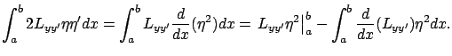
The first, non-integral term on the right-hand side vanishes due to the boundary conditions (2.11). Therefore, the second variation can be written as
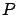
is continuous, andWhen we come to the issue of sufficiency in the next subsection, we will also need a more precise characterization of the higher-order term labeled as
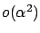
in the expansion (2.57). The next exercise invites the reader to go back to the derivation of (2.57) and analyze this term in more detail.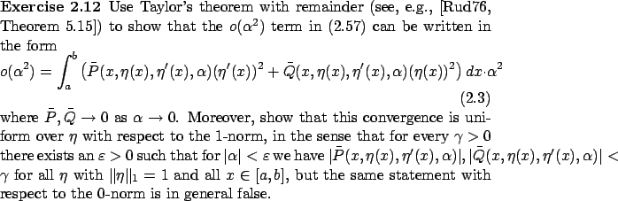
We know that if  is a minimum, then
for all
is a minimum, then
for all
 perturbations
perturbations  vanishing at the endpoints
the quantity (2.58)
must be nonnegative:
vanishing at the endpoints
the quantity (2.58)
must be nonnegative:
What, if anything,
does the inequality (2.61) imply about
and  ?
Does it force at least one of these two functions, or perhaps both,
to be nonnegative on
?
Does it force at least one of these two functions, or perhaps both,
to be nonnegative on  ?
The two terms inside the integral in (2.61) are
of course not independent because
and
?
The two terms inside the integral in (2.61) are
of course not independent because
and
 are related. So, we should try to see if maybe one of them
dominates the other.
More specifically, can it
happen that
is large (in magnitude) while
are related. So, we should try to see if maybe one of them
dominates the other.
More specifically, can it
happen that
is large (in magnitude) while  is small, or
the other way around?
is small, or
the other way around?
To answer these questions, consider a family of perturbations
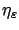
parameterized by small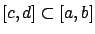
, and inside this interval it equals 1 except near the endpoints where it rapidly goes up to 1 and back down to 0. This rapid transfer is accomplished by the derivative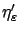
having a short pulse of width approximately and height approximately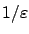
right after , and a similar negative pulse right before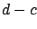
. We base the subsequent argument on this graphical description, but it is not difficult to specify a formula for and use it to verify the claims that follow; see, e.g., [GF63, p. 103] for a similar construction.
We can see that
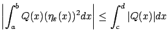
and this bound is uniform over . On the other hand, for nonzero the integral
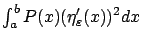
does not stay bounded as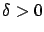
we have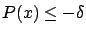
for all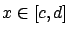
. Assume that there is an interval inside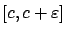
of length at least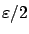
on which is no smaller than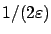
; this property is completely consistent with our earlier description of and . We then have
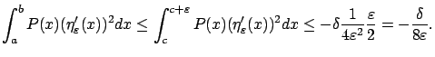
As
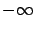
, dominating the bounded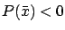
for some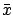
on which is negative, and the above construction can be applied.2.3
Recalling
the definition of
in (2.59), we arrive at our
second-order necessary condition for optimality: For all  we must have
we must have
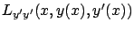
, which becomes a symmetric matrix, must be positive semidefinite for all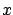
, i.e., (2.62) must hold in the matrix sense along the optimal curve.As a brief digression, let us recall our definition (2.29) of the Hamiltonian:
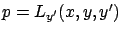
. We already noted in Section 2.4.1 that when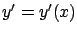
, the velocity of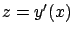
, which is a consequence of (2.33). Legendre's condition tells us that, in addition,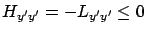
along an optimal curve, which we can rewrite in terms of
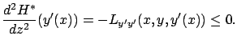
Thus, if the above stationary point is an extremum, then it is necessarily a maximum. This interpretation of necessary conditions for optimality moves us one step closer to the maximum principle. The basic idea behind our derivation of Legendre's condition will reappear in Section 3.4 in the context of optimal control, but eventually (in Chapter 4) we will obtain a stronger result using more advanced techniques.